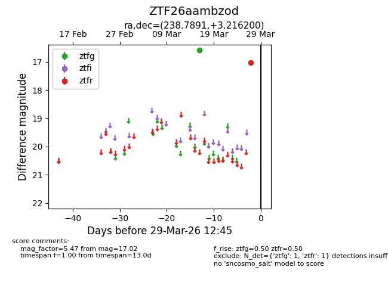
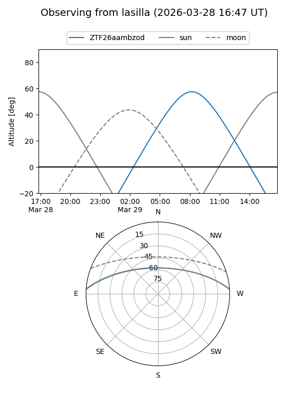
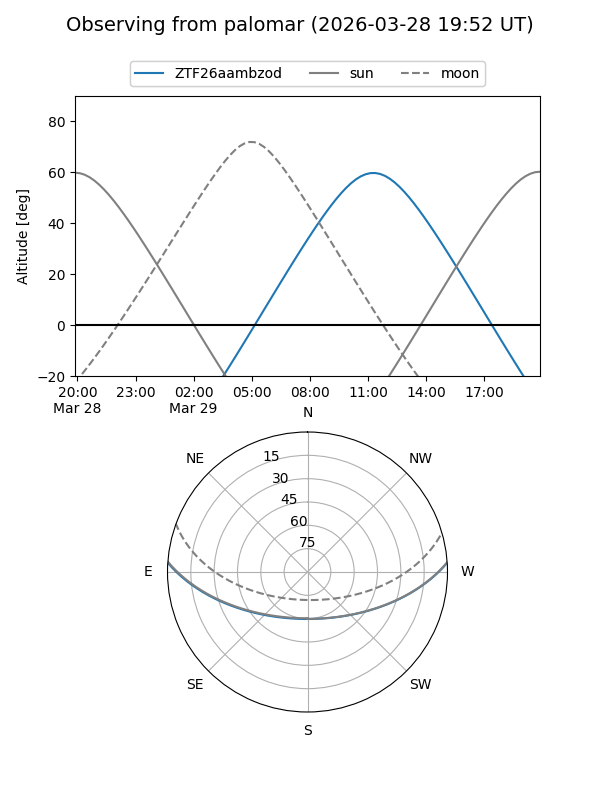

ZTF26aambzod
Target ZTF26aambzod at 2026-03-29 12:48
Aliases and brokers:
FINK: link
Lasair: link
ALeRCE: link
alt names
ZTF26aambzod (ztf,fink_ztf)
Coordinates:
equatorial (ra, dec) = 238.7891,+3.21620
equatorial (HMS+DMS) = 15:55:09.37,+03:12:58.32
galactic (l, b) = (12.5359,+40.06315)
Flags:
Photometry:
last ztfg=16.59, ztfr=17.02
1 ztfg, 1 ztfr detections
Lightcurve

Visibility


Additional plots